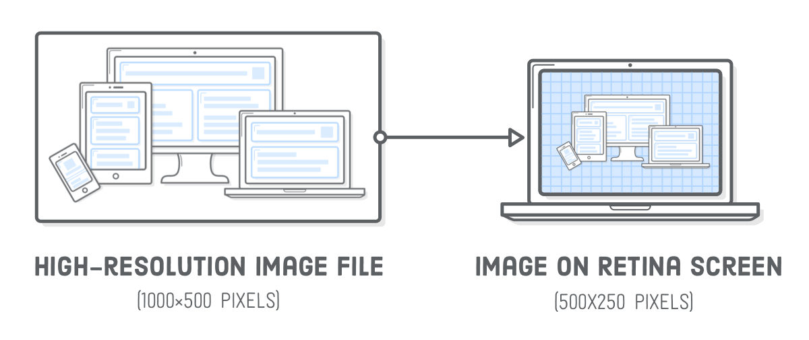
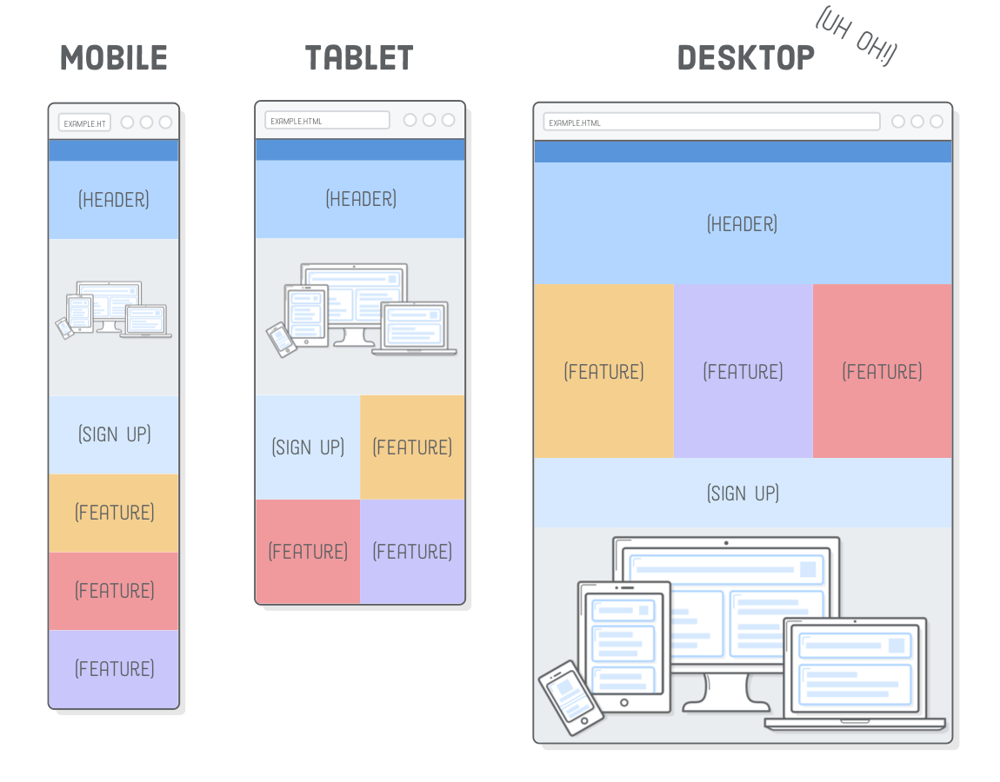
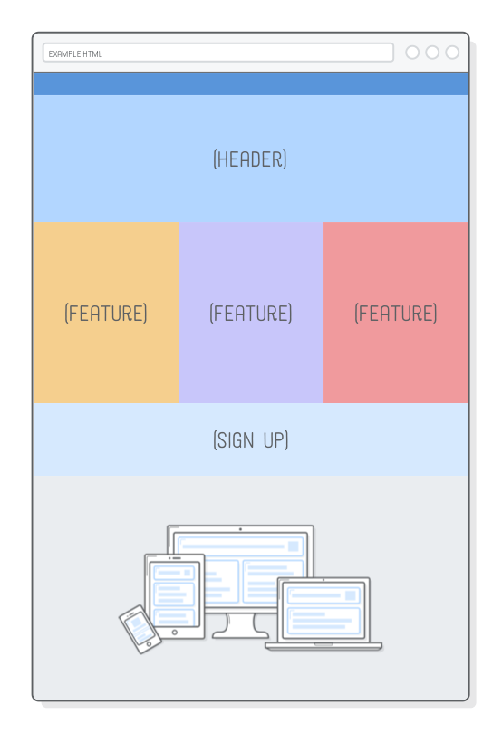
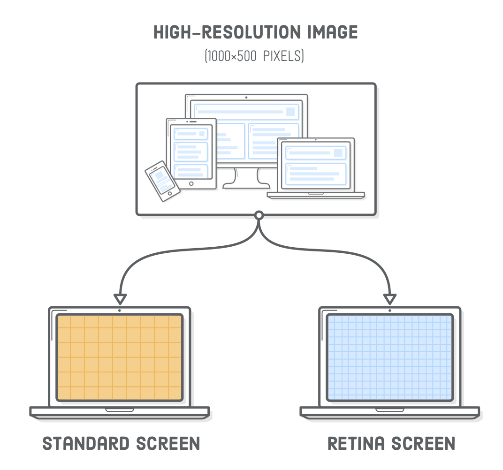
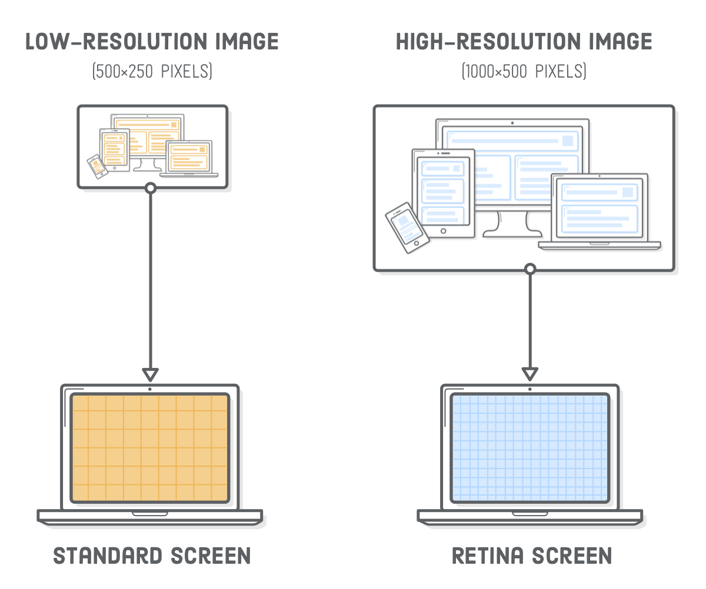
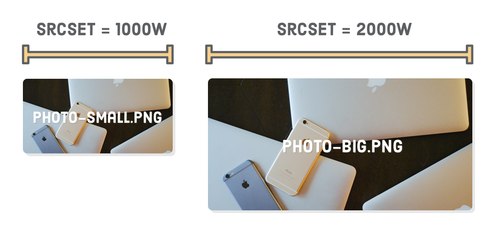
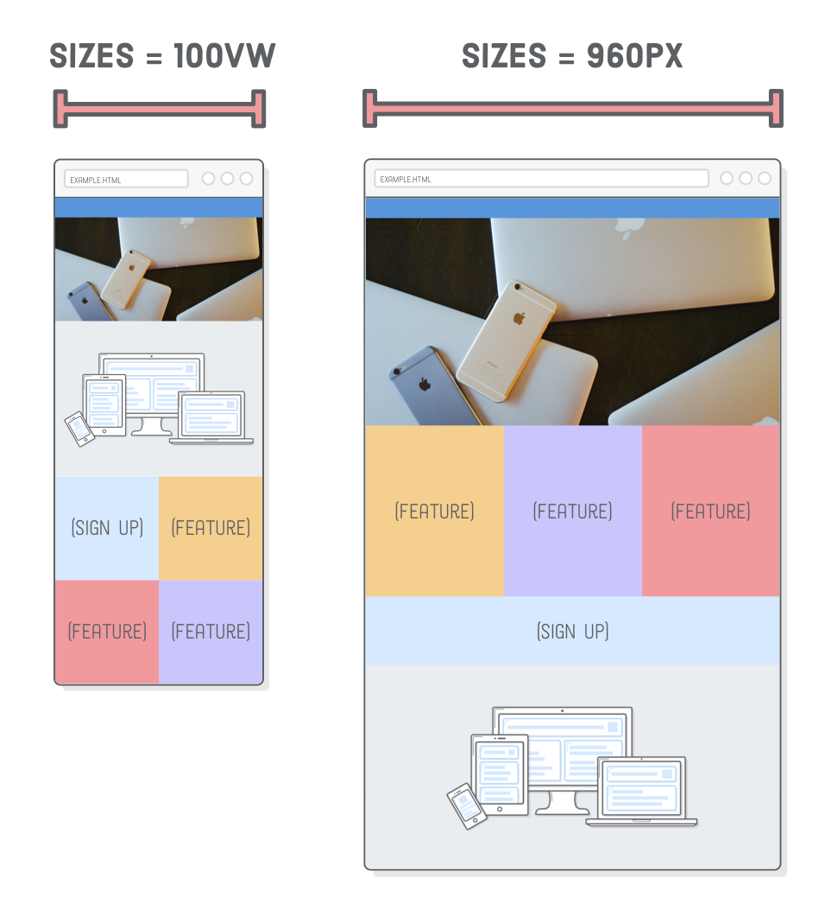

Responsive images are hard. Like, actually hard. But don’t be scared.
In Responsive Design, we learned how
to use media queries to create separate mobile, tablet, and desktop layouts.
Now, we’re going to add images to the mix. Just as media queries let us
conditionally present different CSS rules, we want to display different images
based on the user’s device.
The problem is, images have inherent dimensions. We can’t stretch a photo
that’s 500×250 pixels to anything beyond 500 pixels wide because it’ll
get pixelated. Retina displays and mobile devices complicate things even more.
To make our images responsive, we now have to take three things into
consideration:
The device’s dimensions
The image’s dimensions
The device’s screen resolution
This will be more difficult than media queries, which were only concerned
with device width. But don’t worry, there are standard ways to solve all these
problems, and we’ll walk you through them one step at a time.
Setup
To experiment with responsive images, we need a responsive website to work
with. This chapter will be building off of the example web page we put together
in the previous chapter. We’ll
be adding two images to the page so it looks like the following. This might
seem simple, but these images will change depending on the user’s device (which
is really cool).
If you’re continuing from the last chapter, you simply need to download these image assets and add them to
your project’s images/ folder.
If you’re just joining us, go ahead and download the complete example project, unzip it, and open it up
with Atom. If you’re not familiar with the Atom text editor, be sure to take a
read through the introduction of this
tutorial series.
In either case, your project files should look like this before moving on.
Notice how we have multiple copies of our PNG and JPG images (e.g.,
illustration-big.png and illustration-small.png).
We’ll be letting the browser pick which one of these it should load depending
on the device’s size and screen resolution.
Retina Screens
This is our first time worrying about retina devices, so let’s talk a
little bit about screen resolution. Retina screens have twice as many pixels
per inch than standard-resolution screens. That is to say, each retina pixel is
the equivalent of 4 standard pixels. This has a big impact on how images are
displayed in a web browser.
To render correctly on a retina device, an image needs to be twice as big as
its final display dimensions. For example, if you want to add a 500×250
pixel image to the page, the corresponding image file needs to be
1000×500 pixels.

This is actually a bit of a simplification—not all retina screens are
created equal. For instance, the iPhone 6 Plus has three times as many
pixels per inch as a standard screen. This tutorial focuses on the 2x use case,
but the same techniques apply to 3x retina screens as well.
What’s more, standard displays and smaller devices don’t need
all those extra pixels in high-resolution images, and sending that much
unnecessary data usually results in a bad user experience.
Responsive SVG Images
The easiest way to solve all these problems is with SVG images. They “just
work.” Since they’re vector-based, SVGs avoid the screen resolution problems
that we’ll see in the next section. Let’s take a look by adding an illustration
to our responsive.html page. Replace the existing image in the
.content div so that it matches the following:
Browsers automatically scale up SVGs for retina devices, so this
500×250 pixel SVG image will render crisply on both standard and retina
devices.
SVGs let us forget about screen resolution issues, but we do need to shrink
the illustration to fit neatly into our fluid tablet and mobile layouts.
Firefox will do this automatically, but if you open this page with Chrome and
make your browser very narrow, you’ll find that the image stays the same
size.
To get a fluid image in Chrome, we need to tell the illustration to always
fill the width of its container. In styles.css, put the following
rule with the rest of the base styles, outside of the media queries:
.illustration {
width: 100%;
}
When we specify 100% width on an image, it’ll assume we
want to maintain its aspect ratio and calculate its height automatically. This
fixes the mobile layout, but now the desktop version is huge:

This behavior is perfect for some designs (like the full bleed photo
we’ll see in the next section), but not right now. We want to cap the
width of the illustration to its inherent width, which is 500 pixels. We can
do this with an inline
style:
This is one of the rare times an inline style is acceptable, due to the fact
that it’s describing an innate property of the image. An image’s
physical dimensions are more content than presentation, so it makes sense for
this to appear in the HTML rather than the stylesheet.

Responsive PNG, GIF, and JPG Images
Of course, not all images on the web are SVGs. Sometimes you need to include
a photo. PNG, GIF, and JPG images are “raster images”, meaning that
they are defined pixel-by-pixel instead of with vectors. As a result, they are
much more sensitive to screen resolution than SVGs.
If you’re not worried about optimization, responsive raster images
really aren’t that much harder than using SVG images. Try swapping out
our existing illustration.svg with a PNG file:
We changed around the HTML structure a bit, nesting our
<img/> tag in another container. Without it, the image would
get distorted because flexbox would try to set its height to be the same as the
.content container. This requires a little tweak to our
.illustration CSS rule, too:
.illustrationimg {
width: 100%;
display: block;
}
Also notice the -big suffix in the image’s filename. This
is the high-resolution version of the PNG, which has dimensions of
1000×500. Retina devices need this “2x” size to display the
image crisply. If we were to use the low-resolution version of this image
(500×250 pixels), it would look fine on standard screens, but fuzzy on
retina devices.

Consider this the lazy way to create responsive PNG, GIF, or JPG images, as
it assumes everybody needs a high-resolution image, even if they don’t.
That is to say, a 1000×500 pixel image is overkill for non-retina
devices. We’ll get a little smarter about this in the next section.
Responsive Image Optimization
Different devices have different image requirements. Fortunately, HTML
provides a way to choose the best image for the user’s device. Over the
next few sections, we’ll take a look at three scenarios for optimizing
responsive images:
A standard-resolution screen that doesn’t need a retina-quality
image.
A retina mobile device that can use a standard-quality image because
it’s been scaled down so much.
A desktop layout that uses a wide image, and an associated mobile
layout that uses a taller image.
The first method is the easiest, and it’s great for images smaller than 600
pixels wide because they aren’t big enough to benefit from the second
scenario. The second method is a very important optimization for larger images,
especially full-bleed photos. The third is for when you’re feelin’ fancy.
Retina Optimization Using srcset
High-resolution images are big. Our illustration-big.png file
takes up more than twice as much disk space as its low-resolution counterpart.
It doesn’t make sense to serve all that extra data when the user
doesn’t actually need it.
Adding a srcset attribute to our <img/>
element lets us present our high-resolution image only to retina
devices, falling back to the low-resolution version for standard screens.
Update our .illustration element to match the following:
The srcset attribute points to a list of alternative image
files, along with properties defining when the browser should use each of them.
The 1x tells the browser to display
illustration-small.png on standard-resolution screens. The
2x means that illustration-big.png is for retina
screens. Older browsers that don’t understand srcset fall back to
the src attribute.

Typically, the low-res and high-res versions of an image would be the exact
same (except for their dimensions), but we made
illustration-small.png yellow so you can easily differentiate it
from the retina version, which is blue.
It’s a little hard to see this in action without a real website, so we
included the previous snippet on this page. The image below should be blue if
you’re viewing it on a retina device. Otherwise, it will be yellow for
standard-resolution screens.
If you’re building these examples on a computer with a retina screen,
you can also try temporarily changing that 2x to 1x
to see what a non-retina image looks like. It’s a little fuzzy (and
yellow).
Screen Width Optimization Using srcset
Great! We can save some extra bytes for non-retina devices. Regrettably, the
above srcset technique misses an important use case for larger
images: if the user has a retina smartphone, it’ll download the
high-resolution image even when the standard version would suffice.
Imagine that we wanted to display a big photo in our .header
element. The header is 960 pixels wide in our desktop layout, so our photo
needs to be at least 1920 pixels wide to display well on retina screens.
We’ll also provide a 960 pixel-wide photo for standard screens. Now,
consider a smartphone with a retina screen. Smartphones are typically less than
400 pixels wide in portrait mode, which means that the corresponding
retina-quality image would only need to be 800(ish) pixels wide.
Hey! We can serve our standard-resolution photo to retina smartphones!
The lesson here is that we want to optimize larger images based on their
final rendered dimensions, not just the device’s screen resolution.
Let’s go ahead and add that big photo to our .header
element:
We have the same srcset element as the last section, but
instead of the 1x and 2x descriptors, we’re
providing the inherent physical width of the image. The 2000w
tells the browser that the photo-big.jpg file is 2000 pixels wide.
Likewise, the 1000w means photo-small.jpg has a width
of 1000 pixels. If you’re wondering about that w character,
it’s a special unit used only for this kind of image optimization
scenario.

Image width alone isn’t enough for a device to determine which image
it should load. We also need to tell it what the final rendered width of the
image will be. That’s where the sizes attribute comes in. It
defines a series of media queries along with the image’s rendered width
when that media query is in effect.

Here, we’re saying that when the screen is at least 960px
wide, the image will also be 960 pixels wide. Otherwise, the 100vw
default value tells the browser that the image’s width will be 100% of
the “viewport width” (a fancy term for screen width). You can read
more about the vw
unit over at MDN. All of this matches the image resizing behavior
that’s in our CSS.
Speaking of which, we need to make some changes to position our new header
image correctly. Add both of the following rules to our other base styles,
right above the mobile styles media query:
Remember that our low-resolution photo is 1000 pixels wide, which means that
2x retina devices can use it as long as their screen is less than 500 pixels
wide. In Firefox, you should now be able to resize the browser to see the
retina version (“Big”) when the window is wider than 500 pixels and
the non-retina version (“Small”) for narrower widths.
We’re now serving a 115KB image to mobile devices instead of forcing
them to use the high-res 445KB image. That’s a big deal, especially for
websites that use a lot of photos.
Testing With Chrome
This technique works just fine in Chrome, but we can’t really tell
because it’s being clever. Chrome will always use the high-res version if
it has already been cached locally, which means we can’t see the low-res
version by simply making the browser window narrow. We have to avoid the local
browser cache by opening a new incognito window, then avoid loading
photo-big.jpg by making the window very narrow before
loading the page.
Art Direction Using <picture>
The previous section is perfectly acceptable in terms of optimizing data
usage. We could stop there and be just fine, but we’re going to get a
little bit fancier with “art direction”. Think of art direction as
responsive image optimization for designers.
It lets you optimize layouts by sending completely different images
to the user depending on their device. Compare this to the previous section,
which optimized the same image for different devices. For instance,
our header photo is pretty wide. Wouldn’t it be great if we could crop a
taller version and present that to mobile devices instead of the wide desktop
version?
For this, we need the <picture> and
<source> elements. The former is just a wrapper, and the
latter conditionally loads images based on media queries. Try changing our
.header element to the following:
Conceptually, this is pretty similar to using media queries in CSS. In each
<source> element, the media attribute defines
when the image should be loaded, and srcset defines
which image file should be loaded. The <img/>
element is only used as a fallback for older browsers. You should be able to
see the tall version of the photo when you shrink your browser window:
This level of control will make your designer very happy, but the trade off
is that it doesn’t let the browser automatically pick the optimal image.
This means we lost our retina optimization from the previous section: as long
as the screen width is 401 pixels or greater, the browser will always
use the high-resolution, wide-cropped image.
While it is possible to combine the best of both worlds, it gets complicated
real quick. Our recommendation is to stick to the 1x and
2x version of srcset for images less than 600 pixels
wide, use the srcset plus sizes method from the
previous section for bigger photos, and reserve <picture>
for when you’re trying to do something real fancy with your designer.
Summary
Responsive images may seem rather complicated, but there’s really only two
problems we’re trying to solve:
Make images fit into mobile layouts while respecting their intrinsic size
Avoid making the user download unnecessarily large image files
We accomplished the former by making images always stretch to fill 100%
of their container while limiting their size with an inline
max-width style. For the latter, we used srcset to
optimize for screen resolution, srcset plus sizes to
optimize for device width, and finally the <picture> element
for manual control over which image file is displayed.
Responsive design is an
evolving topic. Browsers only recently implemented the image optimization
techniques covered in this chapter, despite the fact that responsive design has
been the standard for half a decade. While the technology used to create a
responsive website may change, the fundamental problem of presenting the same
content to different devices will never disappear. So, even if you eventually
need to learn some new tools, the foundational concepts we just introduced
should stay with you forever.
These last five chapters focused entirely on layout. We explored floats,
flexbox, advanced positioning, and how to apply all those concepts to various
screen widths. This is pretty much everything you’ll ever need to lay out web
pages with HTML and CSS. The next chapter scuffles back into the world of HTML,
introducing a bunch of new elements that will make search engines much happier
with our websites.